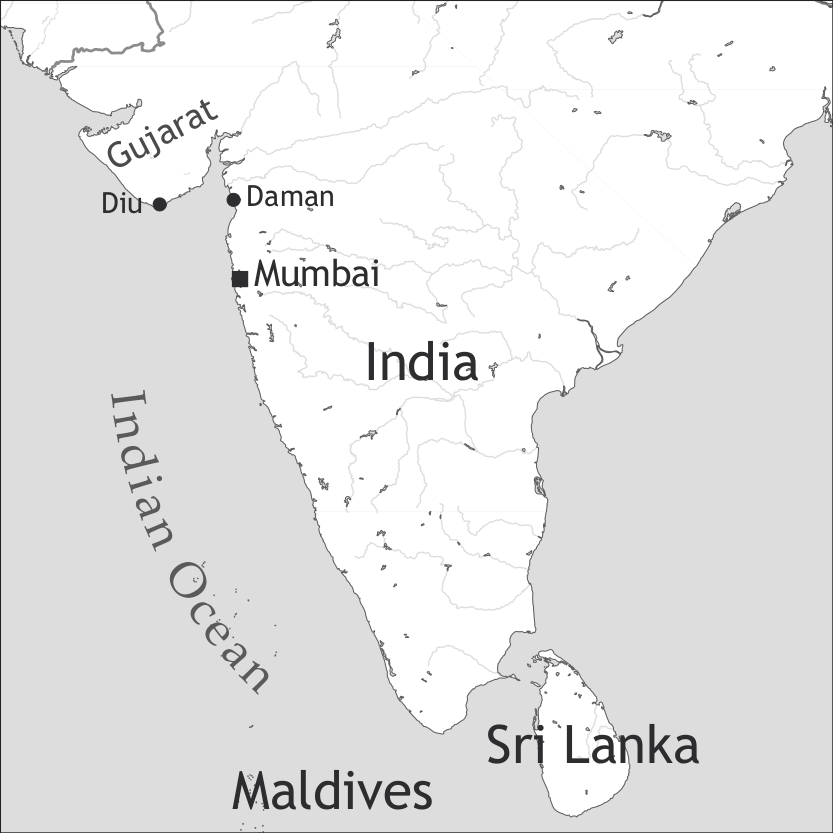

by Hugo C. Cardoso

Diu Indo-Portuguese is spoken on the Indian island of Diu (Union Territory of Daman, Diu and Dadra & Nagar-Haveli), off the tip of the Saurashtra peninsula of Gujarat. Although the territory of Diu also includes two small enclaves on the mainland (Goghla and Simbor), native speakers nowadays concentrate exclusively on the island, and, more specifically, in Diu Town. Diu Indo-Portuguese is presently the mother tongue of most of the local Catholic community. The autochthonous language of the region, Gujarati, is by far the most dominant in Diu, and it is used actively by Diu Indo-Portuguese speakers. Standard Portuguese has some presence in the region, and English is gaining prominence among the Catholics of Diu. Hindi is used by many speakers of Diu Indo-Portuguese, and Konkani less so.
The language is known locally, both by native and non-native speakers, simply as purtəgez ‘Portuguese’. However, when unambiguous reference to the Diuese creole is intended, expressions such as purtəgez də diw ‘Portuguese of Diu’ or lĩg də diw ‘language of Diu’ are used. There are also several depreciative epithets, indicative of the language’s low prestige, which include lĩg tɔrt ‘twisted tongue’, purtəgez kebrad ‘broken Portuguese’, purtəgez barat ‘cheap Portuguese’ and lĩg də trap ‘ragged tongue’. In the absence of a firmly established autoglossonym, I have opted for using the designation Diu Indo-Portuguese as a purely academic term. All examples provided in this chapter were collected by the author in the course of fieldwork in Diu between 2005 and 2008; many have been published in Cardoso (2009a).
The formation of Diu Indo-Portuguese is connected to the long Portuguese rule of the island, which lasted from the 16th to the 20th century. An ancient city, Diu was, in the 16th century, one of the leading ports in western India. Sustained Portuguese presence began in 1535, when they were allowed to build a fortification on the island. The following years were highly bellicose and included two sieges of the fort in 1538 and 1546. As a result, Portuguese activities on the island were initially highly constrained, and the Portuguese settlement was confined within the walls of the fort. It was not until 1554 that they wrested control of the territory and the Christian settlement spilt out.
The formation of a Eurasian community, which, no doubt, received an important influx from prior Portuguese settlements in southern India, must have been rather quick, as was the introduction of Christian missionary activities. The consolidation of a Diuese variety of Indo-Portuguese surely played out among a rather heterogeneous Catholic community (which included Europeans, Eurasians, local converts, Africans,…) but, considering the high degree of mobility among the various Portuguese settlements in Asia, the language must have developed in tandem with related varieties elsewhere. It has been suggested (Cardoso 2009a) that the “fort phase”, i.e. the period before full control of the island, must have been crucial in defining the linguistic sources of Diu Indo-Portuguese, but it seems unlikely that the language should have nativized locally before 1554.
Faced with competition from other ports, Diu declined as a commercial hub from the 17th century onwards and, as a consequence, so did the island’s ethnocultural and linguistic diversity. Slave import halted, the presence of Portuguese settlers diminished, and the local creole was more clearly circumscribed to the Diu-born Catholic population although, presumably, it was always used non-natively by members of other local communities.
The last configuration of the Portuguese empire in India comprised Goa, Daman, Diu and two inland enclaves (Dadra and Nagar-Haveli). Diu established particularly close ties with Daman, on account not only of their relative proximity and a history of administrative unity, but also because the Catholic communities of the two cities consider each other adequate marriage pools. These facts conjugate with similarities in terms of the linguistic ecologies of the two territories to explain the striking parallels exhibited to this day by the Indo-Portuguese varieties of Diu and Daman.
We do not possess any samples of Diu Indo-Portuguese prior to 1885, the year Schuchardt’s pioneering study was published. However, soon after that, local testimonies suggest that a series of circumstances were pushing the language closer to Standard Portuguese (Quadros 1909).
In December 1961, a military offensive integrated Goa, Daman and Diu into the Republic of India, and these territories have enjoyed a special administrative status ever since. Despite the progressive numerical decline of the Catholic community in Diu, their Indo-Portuguese Creole remains vital among several families. For a more detailed account of the formation of Diu Indo-Portuguese, see Cardoso (2009a, ch. 3).
Diu Indo-Portuguese is presently spoken as a native language by circa 180 people, all members of the island’s Catholic community. Some Catholics from elsewhere have acquired the language upon arrival in Diu. It is also understood and spoken (non-natively and not always on a regular basis) by an undefined number of older members of the Hindu and Muslim communities. Among the native speaker community, it is transmitted to the youngest generations and functions as the language of daily interaction. All native speakers of Diu Indo-Portuguese are fluent in Gujarati, which they employ regularly, and many are highly proficient in English. Many also have some knowledge of Hindi or Konkani. In addition, a number of Damanese have settled in Diu (just as some Diuese have moved to Daman), bringing their variety of Indo-Portuguese into the local linguistic ecology. Standard Portuguese has never ceased to play some role in Diu, although since decolonization it has been excluded from all institutional acts except religious services. Despite that, several native speakers of Diu Indo-Portuguese are fluent in Portuguese, which retains great prestige and still exerts a considerable normative pull.
Despite its relative vitality, the medium- to long-term maintenance of Diu Indo-Portuguese is uncertain. Factors of endangerment include the reduced size of the native speaker community and the normative pressure of Portuguese, but also the growth of English as an intra-community language (including religious services) and a language of education, as well as complete absence of official support. For further details on the present-day sociolinguistic situation and endangerment of Diu Indo-Portuguese, see Cardoso (2008); Cardoso (2009a, ch. 2).
|
Table 1. Oral vowels |
|||
|
front |
central |
back |
|
|
close |
i |
u |
|
|
close-mid |
e |
ə |
o |
|
open-mid |
ɛ |
ɔ |
|
|
open |
a |
||
Diu Indo-Portuguese has 8 oral vowels. The close-mid/open-mid distinction is only relevant for vowels in stressed position, to the effect that unstressed mid segments are freely realized as open-mid or close-mid. In addition, unstressed mid vowels may also have a closed realization (e.g. /boˈnit/ ‘beautiful, good’: [bɔˈnit]/[boˈnit]/[buˈnit]); this heightening pull is stronger for back vowels than front vowels. The mid-central vowel is most prevalent in unstressed position, but it does occur in stressed syllables in a few words (e.g. ikəl ‘that (DIST)’). The second syllable of trisyllabic words has particularly weak phonetic prominence, and the mid-central vowel is common in this position; very often, in such syllables, the vowel is omitted (provided that the onset and/or coda consonants can be redistributed without creating disallowed clusters).
|
Table 2. Nasal vowels |
|||
|
front |
central |
back |
|
|
close |
ĩ |
ũ |
|
|
mid |
ẽ |
õ |
|
|
open |
ã |
||
There are only 5 nasal vowels, given that, as in unstressed oral vowels, the close-mid/open-mid distinction does not hold. Articulatorily, the realization of mid nasal vowels may approach either the open-mid or the close-mid sections of the spectrum.
Both oral and nasal diphthongs are attested, with a preference for those of the dropping type, and they preferably occur in stressed syllables.
There are 20 consonant segments with phonemic status, as represented in Table 3.
|
Table 3. Consonants |
||||||||
|
bilabial |
labio-dental |
labio-velar |
alveolar |
post-alveolar |
palatal |
velar |
||
|
plosive |
voiceless |
p |
t |
k |
||||
|
voiced |
b |
d |
g |
|||||
|
nasal |
m |
n |
ŋ |
|||||
|
trill |
r |
|||||||
|
fricative |
voiceless |
f |
s |
ʃ |
||||
|
voiced |
z |
|||||||
|
affricate |
voiceless |
ʧ |
||||||
|
voiced |
ʤ |
|||||||
|
lateral |
l |
|||||||
|
glide |
ʋ |
w |
j |
|||||
For some well-established allophonic relations, see Table 4.
The voiceless/voiced symmetry, which applies to most points of articulation, does not hold with respect to post-alveolar fricatives: whereas [ʒ] occurs as an allophone of /ʤ/ and [ʃ] as an allophone of /ʧ/, only /ʃ/ has phonemic status in Diu Indo-Portuguese, even though it occurs in only a limited number of words (e.g. /peʃ/ ‘fish’). The lack of symmetry with regard to labio-dental fricatives may be only apparent, as the approximant /ʋ/ can be seen as the voiced counterpart of /f/. Even though in Cardoso (2009a) I represented the underlying phoneme as /v/, so as to highlight certain phonetic similarities between /f/ and /ʋ/ (e.g. the fact that, in devoicing contexts, /ʋ/ is realized as [f]), I have opted for a different notation here in light of the fact that, in the corpus, the realization of the voiced phoneme is always approximant.
In syllable-final position followed by a consonant or a gap, plosives have an unreleased realization, whereas fricatives undergo devoicing.
The velar nasal phoneme /ŋ/ has a set of interesting properties. As a matter of course, it triggers the production of a preceding palatal glide (as do post-alveolar fricatives). In intervocalic contexts, the realization of the velar nasal is approximant and, in extreme instances, it can result in a nasal glide.
Stress falls predictably on the word’s last syllable. Words can be monosyllabic, disyllabic or trisyllabic, and the language admits both simple and complex onsets and codas (with sequences of no more than two segments); the possibilities of complex onsets are fricative/plosive + liquid, and complex codas have the structure liquid + fricative/plosive.
Traditionally, Diu Indo-Portuguese is not a written language, except for a few ethnographically oriented records of songs or speech, the authors of which used idiosyncratic adaptations of Portuguese orthography. As such, no official orthography exists. The spelling used in this volume was developed for scientific purposes, viz. to aid in the description of the language. The orthographic system is given in Table 4, and fully motivated in Cardoso (2009a: 102–108).
|
Table 4. Orthographic conventions |
||||||
|
grapheme |
phoneme |
common realizations |
grapheme |
phoneme |
common realizations |
|
|
<a> |
/a/ |
[a] |
<p> |
/p/ |
[p] |
|
|
<ã> |
/ã/ |
[ã] |
<b> |
/b/ |
[b] |
|
|
<ɛ> |
/ɛ/ |
[ɛ] |
<t> |
/t/ |
[t] |
|
|
<e> |
/e/ |
[e] (stressed), |
<d> |
/d/ |
[d] |
|
|
[e] or [ɛ] (unstressed) |
<k> |
/k/ |
[k] |
|||
|
<ẽ> |
/ẽ/ |
[ẽ] or [ɛ̃] |
<g> |
/g/ |
[g] |
|
|
<i> |
/i/ |
[i] |
<m> |
/m/ |
[m] |
|
|
<ĩ> |
/ĩ/ |
[ĩ] |
<n> |
/n/ |
[n] |
|
|
<ɔ> |
/ɔ/ |
[ɔ] |
<ŋ> |
/ŋ/ |
[ŋ] or [ɰ̃] |
|
|
<o> |
/o/ |
[o] (stressed), |
<r> |
/r/ |
[r] or [ɾ] |
|
|
[o] or [ɔ] (unstressed) |
<f> |
/f/ |
[f] |
|||
|
<õ> |
/õ/ |
[õ] or [ɔ̃] |
<v> |
/ʋ/ |
[ʋ] |
|
|
<u> |
/u/ |
[u] |
<s> |
/s/ |
[s] or [ʃ] |
|
|
<ũ> |
/ũ/ |
[ũ] |
<z> |
/z/ |
[z] |
|
|
<ə> |
/ə/ |
[ə] or [ɐ] |
<x> |
/ʃ/ |
[ʃ] |
|
|
<y> |
/j/ |
[j] |
<ch> |
/ʧ/ |
[ʧ] or [ʃ] |
|
|
<w> |
/w/ |
[w] |
<j> |
/ʤ/ |
[ʤ] or [ʒ] |
|
|
<l> |
/l/ |
[l] |
||||
In addition to the head noun (N), the Noun Phrase may contain a host of modifiers, including adjectives (embedded in an Adjective Phrase, AdjP; see below), quantifiers (Qtf) and Ordinals (Ord), deictic modifiers (Dct, i.e. adnominal possessives and demonstratives), and also relative clauses (Rel) and Prepositional Phrases (PP). The basic structure of the NP, which never obtains fully in the spoken corpus, is given in (1):
(1) Dct + Qtf/Ord + AdjP + N + PP/Rel
Relatively rare variations of this structure include postnominal adjectives and prenominal possessor NPs (see below).
The NP-negator (NegNP: niŋũ ‘no X’) and adnominal interrogative words (AdnInt: kwɔl ‘which’; kwõt ‘how much/many’; ki ‘what’) do not co-occur with any other modifiers. The structure of negated or interrogated NPs is as follows:
(2) NegNP/AdnInt + N
(3) Yo nã te [niŋũ amig].
1SG NEG have.NPST NEG friend
‘I have no friends.’
(4) [Kwõt ɔr] jə fik-o?
how.much hour already become-PST
‘What time is it?’
The Adjective Phrase consists of an adjective (Adj), which is invariant, optionally modified by an intensifier (Intfr), with the following structure:
(5) Intfr + Adj
In the following example, the Adjective Phrase is enclosed in brackets:
(6) Leslie ɛ [bẽy piken] baba ɛ.
Leslie COP.NPST very small baby COP.NPST
‘Leslie is a very small baby.’
In comparative constructions of equality, the predicative adjective is optionally modified by tãt ‘as much as’, as in (7). In comparative constructions of superiority, it is normally modified by may(s) ‘more’ and the standard of comparison is preceded by the possessive/ablative preposition də ‘of, from’ – see example (8). Comparison of inferiority is highly infrequent and apparently acrolectal; it takes a form similar to that of comparatives of superiority and employs men ‘less’ instead of may(s).
(7) Aline ɛ (tãt) alt kom irmã.
Aline COP.NPST as tall like sister
‘Aline is as tall as [her] sister.’
(8) Galiŋ ɛ mays barat ki də karner.
chicken COP.NPST more cheap COMPAR of mutton
‘Chicken is cheaper than mutton.’
The noun is invariant. Bare nouns are unspecified with regard to number, as shown by the competing readings of (9):
(9) Makak vey.
monkey come.PST
‘The monkey/monkeys came.’
The language makes optional use of tud, which is also the universal quantifier meaning ‘all’, as a general collectivizer marking plural reference. Pluralizing tud often mediates between a deictic modifier and the noun (10) to construe an additive plural; whenever tud is postposed to the noun, the meaning is that of a similative plural (11):
(10) Ikəl tud koyz ki lɛvo nə <museum father> Marian ki lɛv-o, nə?
DEM all thing REL take.PST LOC museum Father Mariano REL take-PST REQ
‘Wasn't it Father Mariano who took those things to the museum?’
(11) kwɔn vẽy mĩ nitiŋ tud
when come.NPST my grandchild SIML
‘when my grandchildren and so come (i.e. my grandchildren and people like them)’
In a short corpus collected in the late 19th century (Schuchardt 1885), nominal reduplication emerges as the standard strategy to mark additive plurality, but in the modern corpus this is extremely marginal and restricted to some of the oldest speakers:
(12) muyɛ~muyɛr də Manu, muyɛ~muyɛr də ɔrlãd
woman~woman of Manu woman~woman of Orlando
‘the women of Manu(’s family), the women of Orlando(’s family)’
The personal pronoun paradigm is given in Table 5, alongside adnominal possessives. There is no dependent/independent pronoun distinction, but there is a direct/oblique distinction which applies only to 1SG personal pronouns. Oblique pronouns are preceded by one of the regular dative/accusative prepositions a (preferred with personal pronouns) or pə.
|
Table 5. Personal pronouns and adnominal possessives |
|||
|
direct |
oblique |
adnominal possessives |
|
|
1sg |
yo |
a / pə mĩ |
mĩ |
|
2sg |
use |
a / pə use |
duse |
|
3sg |
el [m.], ɛl [f.] |
a / pə el [m.], a / pə ɛl [f.] |
del [m.], dɛl [f.] |
|
1pl |
nɔs |
a / pə nɔs |
nɔs |
|
2pl |
usez |
a / pə usez |
dusez |
|
3pl |
e(l)z |
a / pə e(l)z |
de(l)z |
The pronoun paradigm reveals some interesting patterns of syncretism. First person adnominal possessives are formally equivalent to their corresponding personal pronouns, with the proviso that for 1SG the syncretism involves the oblique form of the personal pronoun. All other adnominal possessives are derived from the contraction of the preposition də ‘of’ + personal pronoun, arguably fused into a single grammatical unit. Whereas adnominal possessives occur prenominally, possessor noun phrases take the form of prepositional phrases involving the preposition də ‘of’ and an NP, and (with few exceptions) occur after the head noun.
Demonstratives, which are not marked for number, code a two-way spatial opposition. The proximal form is es ‘this’ and the distal is ikəl ‘that’. In addition to deictic (13) and anaphoric reference, demonstratives also operate as markers of definiteness (14):
(13) Aki aki, nə es igrej.
here here LOC DEM church
‘Here here, in this church.’
(14) Es tud ɔn foy raprig?
DEM all where go.PST girl
‘Where did the girls go?’
Indefiniteness, on the other hand, is marked with ũ ‘one’:
(15) Ũ makak t-iŋ i ũ <crocodile>.
one monkey EXIST-PST and one crocodile
‘(Once upon a time,) there was a monkey and a crocodile.’
As can be seen in the previous example, NP coordination may involve the conjunction i ‘and’, which is also available for clausal coordination (see §8). In addition, NPs (but not clauses) can be conjoined by ku, which is also a comitative marker ‘with’:
(16) […] <cousin> ku <auntie>.
[…] cousin with auntie
‘[I have many] cousins and aunties.’
As a result of ellipsis, virtually any constituent of the NP can occur in isolation. In addition, it is not uncommon for NPs to occur discontinuously – see (14) above.
The only element which is allowed to break up close-knit sub-structures of the NP (such as the AdjP or the POSS+N cluster) is the emphatic marker mem:
(17) Kurəsãw də makak dẽt del mem korp.
heart of monkey inside of.3sg EMPH body
‘The monkey’s heart (is) inside his own body.’
(18) Bẽy mem pɔb ɛ.
very EMPH poor COP.NPST
‘(He) is really very poor.’
The expression of tense, aspect and mood categories in Diu Indo-Portuguese involves both morphological marking and preverbal auxiliaries. Verbs are organized into three conjugational classes, identified by different thematic vowels -a-, -e- and -i-, which determine the form of their inflectional suffixes (see also Luís 2008). Verbs construct four different forms: the Infinitive, Non-Past and Past forms, as well as a Participle. This is shown in Table 6, where inflectional classes -a-, -e- and -i- are exemplified with the conjugation of the regular verbs para ‘to stop’, vẽde ‘to sell’ and pidi ‘to demand’, respectively.
|
Table 6. Verbal inflection |
||||||||
|
Inflectional classes |
||||||||
|
-a- |
-e- |
-i- |
||||||
|
Structure |
Example |
Structure |
Example |
Structure |
Example |
|||
|
Infinitive |
root + theme + ø |
para |
root + theme + ø |
vẽde |
root + theme + ø |
pidi |
||
|
Non-Past |
root + ø + ø |
par |
root + ø + ø |
vẽd |
root[alternating V] + ø + ø |
pɛd |
||
|
Past |
root + ø + o |
paro |
root + theme + w |
vẽdew |
root + theme + w |
pidiw |
||
|
Participle |
root + theme + d |
parad |
root + i + d |
vẽdid |
root + i + d |
pidid |
||
Notice that the -i- conjugational class displays root allomorphy. Many high-frequency verbs fall outside these predictable inflectional paradigms. In the case of vay ‘to go’, for instance, the paradigm is highly suppletive and admits some formal variation: Infinitive vay/ir; Non-Past vay; Past foy; Participle foyd/id.
The Non-Past and Past forms are finite forms which, in addition to the tense information implied by their classification, typically convey perfective aspect. The perfective/imperfective distinction is particularly obvious in Past tense (see example 19); since the punctual nature of the moment of utterance logically prevents a perfective reading, Non-Past finite forms are reserved for predications for which internal temporal structure is less relevant, thereby conveying gnomic meaning – as in (20) – and, sometimes, habitual:
(20) Nə damãw nã fal <biting>.
in Daman NEG say.NPST biting
‘In Daman [they] don’t say “biting”.’
Infinitive forms must select from a host of preverbal auxiliaries to produce various aspectual and modal combinations. Auxiliaries are organized in logical pairs coding a Past vs. Non-Past tense distinction, and most of them are verbal in nature (i.e. they derive from lexical verbs and display signs of inflection). It is often challenging to decide whether a VFIN + VINF sequence constitutes an instance of auxiliary modification or of a lexical verb governing a non-finite complement clause without an overt complementizer. Tables 7 and 8 list only those forms which show clear signs of grammaticalization (e.g. semantic bleaching, phonetic erosion) and/or which are particularly common (for further strategies to indicate aspectual and modal information, see §8 below). The categories in these tables represent an initial approach to the study of Diu Indo-Portuguese Tense-Aspect-Mood, an area of description which requires further research; yet, it is clear that the exact meaning conveyed by the auxiliaries depends not only on contextual clues but also on lexical and predicate semantics:
|
Table 7. Aspectual auxiliaries |
|||
|
basic tense value |
basic aspectual value |
common applications |
|
|
tə / te |
non-past |
imperfective |
progressive (with less-time-stable predicates) habitual (with more-time-stable predicates) |
|
tiŋ |
past |
imperfective |
progressive (with less-time-stable predicates) habitual (with more-time-stable predicates) |
(22) Yo t-iŋ gi-a saykəl.
1SG IPFV-PST ride-INF bicycle
‘I was riding my bicycle.’
|
Table 8. Modal auxiliaries |
|||
|
basic tense value |
basic modal value |
common applications |
|
|
a / ad |
non-past |
irrealis |
future reference apodosis of conditionals counterfactual (rhetorical questions) dubitative mood |
|
vidi |
past |
irrealis |
counterfactive mood apodosis of conditionals |
|
pɔd / pəd |
non-past |
potential |
possibility physical ability permission |
|
pudiŋ |
past |
potential |
possibility physical ability permission |
|
ti ki |
non-past |
obligation |
|
|
tiŋ ki |
past |
obligation |
|
|
(a) kere |
- |
obligation predictive |
|
Some of these modal auxiliaries are exemplified below:
(25) Pɔd kuməs-a.
can.NPST begin-INF
‘[You] may begin.’
(26) Ali də purtəgal ti.ki da rɛpɔs.
there from Portugal must give.INF answer
‘[They] have to give an answer, from Portugal.’
With regard to the modal use of (a) kere, it is interesting to notice that it basically consists of the infinitive form of the lexical verb kere ‘to want’, most often modified by the irrealis marker:
Participle forms straddle the verbal/nominal divide. Their classification is particularly puzzling as they often combine with a verbal form which is both a copula and the imperfective auxiliary, as exemplified in (29):
(28) Nã fik asa-d dret?
NEG become.NPST roast-PTCP properly
‘Isn’t [it] getting properly roasted?’
In addition to the main verb and its auxiliaries, the VP also accommodates the clausal negator nã/nə - see, for instance, the previous examples, as well as (3) and (20) above. Diu Indo-Portuguese has obligatory negative concord; the presence of a negative polarity constituent (negated NP or negative indefinite pro-form) triggers clausal negation:
(30) Nĩge nã apiŋ-o pex.
nobody NEG catch-PST fish
‘Nobody caught fish.’
(31) El nuk nə foy sinem.
3SG never NEG go.PST cinema
‘He never went to the movies.’
Non-verbal predication requires the support of a copula. Copulas in Diu Indo-Portuguese are verbal, and they convey a Past/Non-Past tense opposition. There are two common copulas. The individual-level copula (non-Past ɛ; Past ɛr) is reserved for the predication of more or less permanent states. Its prototypical functions include equation (32) and the establishment of proper inclusion of an entity into a group of items (33):
(32) Oj ɛ dumĩg.
today COP.NPST Sunday
‘Today is Sunday.’
(33) Mĩ pay ɛr pulis.
1SG.POSS father COP.PST police
‘My father was a policeman.’
The other copula (non-Past te; Past tiŋ) is at once a stage-level copula (34) and locative copula (35). The same verbal form is also used intransitively as an existential verb (36), transitively as a possessive verb (37) and is also formally linked to the imperfective auxiliary discussed above:
(34) Yo te bõ.
1SG COP.NPST good
‘I am fine.’
(35) Mĩ irmãw t-iŋ Go.
my brother COP-PST Goa
‘My brother was in Goa.’
(36) Nə te nad.
NEG EXIST.NPST nothing
‘No problem (lit. There is nothing).’
(37) Yo nã te muyt famil.
1SG NEG have.NPST much family
‘I don’t have a numerous family (lit. I don’t have a lot of family).’
Diu Indo-Portuguese makes use of a verbalizing strategy which consists of combining a non-verbal element (typically a noun or adjective) with the light verb faze ‘to make’, thereby creating a complex predicate. In the literature on Indic languages, similar complexes are known as conjunct verbs. In such constructions, the light verb normally precedes the nominal element, as in (38); a rare counterexample is transcribed in (39):
(38) Nɔs kwɔn fez fon a elz, elz ain t-iŋ durmid.
1PL when make.PST phone to 3PL 3PL still IPFV-PST asleep
‘When we called them, they were still asleep.’
(39) Tɛ agɔr nə vey nad, tud papɛl jə prõt jə fez.
until now NEG come.PST nothing all paper already ready already make.PST
‘So far, nothing has come, [I] have already prepared all the papers.’
Despite considerable flexibility, there is an underlying basic structure which applies to non-focused, fully-expressed affirmative sentences. In intransitive clauses, the basic word order is S-V:
(40) Armando kai-w.
Armando fall-PST
‘Armando fell down.’
The basic word order of monotransitive clauses is S-V-O:
(41) Yo tə kuziŋ-a aroz ku pex.
1SG IPFV.NPST cook-INF rice with fish
‘I am cooking rice and fish.’
Ditransitive constructions normally follow the order S-V-OD-OI (although the S-V-OI-OD structure is not infrequent):
(42) Nɔs de-w diŋer pə igrej.
1PL give-PST money DAT church
‘We gave money to the church.’
Nevertheless, argument placement is rather variable (and adjuncts so much so that it is difficult to abstract concrete rules), since word order is highly dependent on pragmatic considerations. There is, for instance, a tendency to front pragmatically prominent arguments, as in (43) and (44):
(43) Tud yo sab faz-e.
all 1SG know.NPST make-INF
‘I can do everything.’
(44) A el yo de-w, mayz kẽ?
DAT 3SG 1SG give-PST more who
‘It was to him that I gave [it], who else?’
As exemplified in the last sentence, ellipsis is very common in Diu Indo-Portuguese. A verb’s valency is often not expressed in full in free speech, and this may affect the order of arguments. If S is elided, for instance, O (particularly if focused) is more likely to occupy the preverbal slot. In the absence of ellipsis, however, S and O are allowed to co-occur in preverbal position – as shown in the previous examples.
Another interesting characteristic of this language is that it admits the repetition of constituents, from NPs to particles or verbs, with various pragmatic functions. The most common type involves predicate doubling, the function of which is normally to ensure a postverbal O also occupies a preverbal slot and therefore receives pragmatic focus. In these constructions, the predicate is repeated in a structure of the type (S-)V1-O-V1 (see example (6) above for an application of the strategy to copular constructions):
(45) Sĩ, <english> fal, may faz <mistakes> faz nə <sentences>.
yes English speak.NPST but make.NPST mistakes make.NPST LOC sentences
‘Yes, [I] speak English, but [I] make mistakes in the sentences.’
Argument alignment is somewhat complex. Grammatical relations are indicated by one of two largely equivalent prepositions which cover the functions traditionally attributed to both accusative and dative case, and beyond: a tends to occur with pronominal arguments; pə usually attaches to nominal arguments.
In general, the sole argument (Subject) of intransitive clauses is unmarked (46), as well as the agents (Subjects) of all transitives and the least agentive arguments (Direct Objects) of ditransitives. Marking of non-agents (Direct Objects) in monotransitive clauses responds to both animacy and semantic role: they are obligatorily marked with a/pə if pronominal or human (47), and unmarked if inanimate (48) – unless the latter are construed as beneficiaries; non-human animates usually cluster with humans with respect to case-marking. Recipients (Indirect Objects) are obligatorily marked with a/pə - see example (42) above. In addition, subject arguments who are experiencers of actions beyond their control also often select a/pə (49):
(46) Yo nã sab.
1SG NEG know.NPST
‘I don’t know.’
(47) a. Yo bate-w a el.
1SG hit-PST a 3SG
‘I hit him.’
b. Yo bate-w pə Bablu.
1SG hit-PST pə Bablu
‘I hit Bablu.’
(48) Aviãw arəm-o pared.
plane hit-PST wall
‘The plane hit the wall.’
(49) A mĩ tə sĩt-i fri.
a 1SG.OBL IPFV.NPST feel-INF cold
‘I feel cold.’
This brief discussion does not exhaust the case-marking possibilities of arguments, since there are several established collocations which code finer semantic distinctions. It does show, however, that the language tends towards (a) a nominative-accusative alignment system with arguments high in the animacy hierarchy, and neutral with inanimate arguments; and (b) a primative-secundative alignment system, with regard to the relation between monotransitive and ditransitive clauses. Crucially, it also demonstrates that the language allows for these basic tendencies to be overruled by semantic considerations.
Polar questions may either resort to the use of the requestative particle nə, as shown in (10) above, or to a particular prosodic contour characterized by rising intonation applied to a syntactic structure indistinguishable from that of the corresponding affirmative. Content interrogatives, on the other hand, employ a series of interrogative pro-forms (kẽ ‘who’; kom ‘how, why’; kwɔn ‘when’; ɔn ‘where’; pərki/purki ‘why’; (u)ki ‘what’) – in addition to the adnominal interrogative discussed in §5. Interrogative pro-forms immediately precede the VP:
(50) Use purki tə da salt?
2SG why IPFV.NPST give.INF jump
‘Why are you jumping?’
(51) Kẽ de-w es a use?
who give-PST DEM DAT 2SG
‘Who gave you that?’
Imperative clauses may either select a Non-Past verb form, as in (52), or an Infinitive verb form, as shown in (53); the latter strategy is slightly more insistent:
(52) Say d-ali.
leave.NPST of-there
‘Get out of there.’
(53) Atər-a es, bay.
throw-INF DEM girl
‘Throw it, girl.’
Addressees are usually not expressed in imperatives but they may be, as in (54). This sentence also illustrates the fact that the requestative particle nə is commonly used in imperatives for added emphasis and/or politeness:
(54) Use vay vist-i nə.
2SG go.NPST dress-INF REQ
‘Go get dressed.’
Prohibitives simply entail the negation of imperatives. In this case, however, only Non-Past verbal forms have been attested:
(55) Nã faz es nə.
NEG make.NPST DEM REQ
‘Don’t do that.’
Hortative constructions, which express encouragement or resolve, employ the hortative particle bam. Bam usually combines with the Infinitive form of the main verb, as in (56), in a syntactic construct which would warrant its classification as an auxiliary. Notice, however, that bam may also be treated like an interjection, as in (57):
(56) Bam fuj-i.
HORT flee-INF
‘Let’s flee.’
(57) Bam, nɔs doy a faz-e <race>.
HORT 1PL two IRR.NPST make-INF race
‘Come, the two of us will make a race (i.e. Let’s both of us make a race).
Conjunctive coordination works differently for NPs and other types of elements. As described in §5 above, NPs can be conjoined by i or ku. However, only i ‘and’ is available for clausal coordination (58):
In predicate sequences, verb forms are often conjoined by i ‘and’, as in (59). In these cases, however, overt coordination can be suppressed – see (60):
(59) Use vay i trag.
2SG go.NPST and bring.NPST
‘Go and bring [it].’
(60) I dəpəy ũ <lion> vey subi-w ali isim.
and then one lion come.PST climb-PST there on.top
‘And then a lion came [and] climbed up there.’
Disjunctive coordination is operated by the conjunction o ‘or’:
(61) Use vay o nã vay?
2SG go.NPST or NEG go.NPST
‘Are you going or not?’
Adversative coordination only applies to full clauses, unlike the previous types. The adversative conjunction is may ‘but’:
Complement clauses may either be of the balanced type (i.e., their verbal form admits independent TAM marking) or deranked (in which case the verbal form is Infinitive). The most basic type of complement clause is a finite clause preceded by the complementizer ki:
(63) Yo sab ki [use foy Una].
1SG know.NPST COMP 2SG go.PST Una
‘I know that you went to Una.’
Utterance complements always occur in direct speech, and may or may not be introduced by the complementizer ki – see (64). Example (65) contains an indirect content question, which is syntactically indistinguishable from a direct content question. (66) is and indirect polar question, which is preceded by the particle si ‘whether’:
(65) Dig a mĩ [use uki kɛr].
tell.NPST DAT 1SG.OBL 2SG what want.NPST
‘Tell me what you want.’
Some verbs, such as e.g. kuməsa ‘to begin’, kaba ‘to finish’, mãda ‘to command’, dixa ‘to allow’ or ajuda ‘to help’ take a deranked complement clause (i.e. nonfinite and not introduced by an overt subordinator), and contribute aspectual and modal semantics to the clause. Some of these disallow the expression of the complement subject, as in (67), while others do not, as shown in (68):
(67) Kwɔn muz vey jə kuməs-o [leũt-a say].
when music come.PST immediately begin-PST lift-INF skirt
‘When the music started, [she] immediately started lifting [her] skirt.’
(68) Nã dex [el fuj-i].
NEG allow.NPST 3SG flee-INF
‘Don’t let it run away.’
Other verbs, including e.g. sabe ‘to know’, kere ‘to want’, will only admit deranked complements in the event that the subject of both the main clause and the complement clause is coreferential; contrast example (63) above with (69), and also (43):
(69) Yo sab [faz-e tud koyz].
1SG know.NPST make-INF all thing
‘I can make all sorts of things.’
Adverbial clauses may be balanced or deranked. Manner adverbial clauses select the adverbial subordinators kom or kufɔr ‘like’; time adverbial clauses take kwɔn ‘when’, ãt/dəpəy ‘before/after’ [+ də for nonfinite clause; + ki for finite clauses], atɛ ki ‘until’, or lɔg ki ‘as soon as’; locative adverbial clauses take ɔn ‘where’; reason clauses employ pərki/purki or (pu)kawz ki ‘because’; adverbial clauses of purpose (nonfinite) are marked with pu ‘to’; conditional clauses use the subordinator si ‘if’. Some examples follow:
(70) Uvi, [Jizuz kwɔn mure-w] use foy <visit>?
hear.INF Jesus when die-PST 2SG go.PST visit
‘Listen, when Jesus died did you go and visit [him]?’
(71) [Dəpəy ki use foy], chuv kuməs-o ka-i.
after COMP 2SG go.PST rain begin-PST fall-INF
‘After you left, it started raining.’
(72) Nɔs nã foy fɛs [kawz ki nɔs t-iŋ bastãt trabay].
1PL NEG go.PST party because COMP 1PL have-PST much work
‘We didn’t go to the party because we had a lot of work [to do].’
(73) Trag ikəl [pu uv-i].
bring.NPST DEM PURP hear-INF
‘Bring that [i.e. a computer] so that [we] can listen.’
(74) [Elz si kum-e pod kumid], elz a fik-a duẽt.
3PL if eat-INF rotten food 3PL IRR.NPST become-INF sick
‘If they eat bad food, they’ll become sick.’
As can be seen in the previous examples – contrast e.g. (70) with (67) above -, the position of adverbial subordinators (and, to some extent, complementizers) within the clause is somewhat flexible. They may occur at the start of the subordinate clause or immediately before its VP. The same applies to relative elements in relative clauses. In Diu Indo-Portuguese, there are two competing strategies to form relative clauses: the relative element may be (a) a relative particle ki (very frequent); or (b) one from a set of relative pro-forms, sensitive to the semantic content and role of the relativized element, which are isomorphic with interrogative pro-forms or subordinators (less frequent). Even though the relative particle and relative pro-forms are not always interchangeable, examples (76) and (77) show instances in which they are:
(75) ikəl pad [ki t-iŋ aki]
DEM priest REL COP-PST here
‘the priest who was here’
(76) ikəl kaz [ɔn/ki use fik]
DEM house where/REL 2SG stay.NPST
‘the house where you live/that you live in’
(77) maner [kom/kufɔr/ki nɔs fal ẽ kaz]
manner how/how/REL 1PL speak.NPST in house
‘the way how/that we speak at home’
Still in connection with relative clauses, the language uses a type of cleft (with the crucial difference that only the relative clause contains a verbal form) to assign contrastive focus onto the dislocated element(s) – see the sentence below as well as (10) above:
(78) Yo [ki fez es].
1SG REL do.PST DEM
‘It was me who did that.’